수능(국어영역) (2016-10-11 기출문제)
1. <보기>의 ⓐ ~ ⓒ와 관련지어 위 토의에 대해 이해한 내용으로 적절하지 않은 것은? [3점](1번 공통지문 문제)
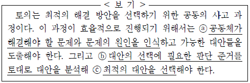
- ⓐ: 동아리 활동이 원활하게 이루어지지 않고 있는 것을 해결해야 할 문제로 제시하고 있군.
- ⓐ: 토론 위주의 활동으로 인해 부원들의 흥미와 의욕이 저하된 것을 문제의 원인으로 인식하고 있군.
- ⓑ: 역사 영화를 보는 활동을 하자는 대안과 역사 유적 답사를 다녀오자는 대안에 대해 분석하고 있군.
- ⓑ: 부원들의 역할 분담이 공정하게 이루어지는지의 여부를 대안 선택의 준거로 삼고 있군.
- ⓒ: 정기적으로 역사 영화를 보는 활동을 최적의 대안으로 선택하고 있군.
(정답률: 30%)

2. ㉠, ㉡에 대한 설명으로 가장 적절한 것은?(1번 공통지문 문제)
- ㉠: 과거의 문제 해결 사례를 들어 동의하고 있다.
- ㉠: 대안의 실시로 기대되는 효과에 긍정적 반응을 보이고 있다.
- ㉡: 예상되는 문제점을 고려하여 생각을 바꾸고 있다.
- ㉡: 다른 대안의 한계를 지적하면서도 이에 부분적으로 동의 하고 있다.
- ㉡: 소수 의견에 대한 존중을 전제로 방안을 실행하는 데에 동의하고 있다.
(정답률: 40%)
3. <보기>는 위 발표를 들으며 학생들이 한 생각이다. <보기>에 드러난 학생들의 듣기 전략에 대한 설명으로 적절하지 않은 것은?(4번 공통지문 문제)
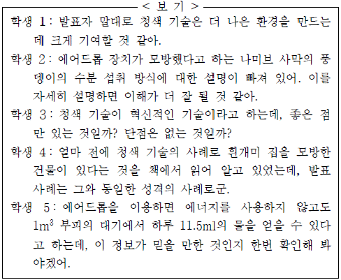
- 학생 1은 발표자가 전제로부터 결론을 이끌어 내는 과정의 논리적 타당성을 판단하며 들었다.
- 학생 2는 발표 내용에 대해 보완할 점이 없는지 평가하며 들었다.
- 학생 3은 발표 내용이 편향된 것은 아닌지 판단하며 들었다.
- 학생 4는 발표 내용을 자신의 배경지식과 관련지어 들었다.
- 학생 5는 발표에 활용한 자료의 신뢰성에 대해 점검하며 들었다.
(정답률: 28%)
4. <보기>의 자료를 활용해 (나)를 수정ㆍ보완하기 위한 방안으로 적절하지 않은 것은? [3점](6번 공통지문 문제)
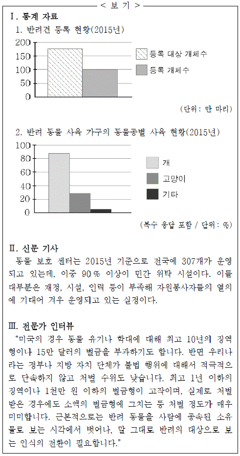
- Ⅰ-1과 Ⅱ를 활용하여, 1문단에서 학대받거나 유기되는 반려동물이 많아지고 있다는 사실의 근거로 삼는다.
- Ⅰ-1, Ⅰ-2를 활용하여, 2문단에서 등록 대상이 되는 반려 동물의 범위와 반려견 등록 현황에 문제가 있음을 지적하는 근거로 삼는다.
- Ⅱ를 활용하여, 3문단에서 열악한 운영 여건으로 인해 동물 보호 센터가 제 기능을 안정적으로 수행하지 못하고 있다는 내용을 뒷받침한다.
- Ⅲ을 활용하여, 4문단에서 외국의 사례와 비교하여 불법 행위에 대한 우리나라 정부나 지방 자치 단체의 처벌이 미미하다는 사실을 뒷받침하는 근거로 삼는다.
- Ⅲ을 활용하여, 5문단에서 반려 동물에 대한 인식이 달라질 필요가 있음을 강조하는 내용을 추가한다.
(정답률: 28%)
5. ㉠을 위한 문구를 <조건>에 맞게 썼을 때 가장 적절한 것은?(6번 공통지문 문제)
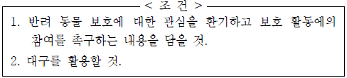
- 당신의 마음이 열려야, 당신의 손길이 닿아야 반려 동물 유기와 학대를 끝낼 수 있습니다.
- 반려 동물 복지에 빨간 불이 켜졌습니다. 이제는 정부가 나서서 초록 불을 켤 때입니다.
- 좋을 때만 반려 동물이라고 생각하지는 않나요? 당신의 반려 동물과 눈을 맞춰 주세요.
- 우리에게 마음의 위안을 주는 반려 동물 우리에게 사랑을 가르쳐 주는 반려 동물
- 동물 학대는 먼 곳에 있지 않습니다. 반려 동물 학대를 감시하는 보안관이 되어 주세요.
(정답률: 20%)
6. ㉠~ ㉤을 고쳐 쓰기 위한 방안으로 적절하지 않은 것은?(9번 공통지문 문제)
- ㉠: 문장 성분 간의 호응이 자연스럽지 않으므로 '궁금해 하는'으로 고친다.
- ㉡: 문맥상 부적절한 단어이므로 '고안'으로 고친다.
- ㉢: 앞뒤 내용을 자연스럽게 연결하지 못하므로 '하지만'으로 고친다.
- ㉣: 글의 통일성을 해치고 있으므로 삭제한다.
- ㉤: 조사의 사용이 잘못되었으므로 '삶에'로 고친다.
(정답률: 40%)
7. ㉠, ㉡에 해당하는 예만을 <보기>에서 골라 바르게 묶은 것은?(11번 공통지문 문제)
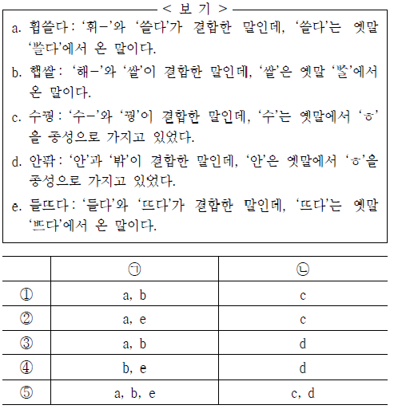
- ①
- ②
- ③
- ④
- ⑤
(정답률: 30%)
8. <보기>의 ㄱ~ ㅁ에 대한 설명으로 적절하지 않은 것은?
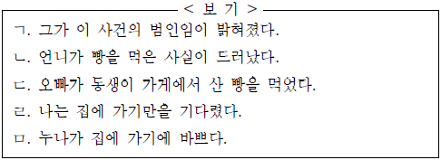
- ㄱ과 ㄴ의 안긴문장은 각각의 안은문장에서 다른 문장 성분으로 쓰인다.
- ㄴ과 ㄷ의 안긴문장은 각각의 안은문장에서 동일한 문장 성분으로 쓰인다.
- ㄴ의 안긴문장은 ㄷ의 안긴문장과 달리 안긴문장 속에 생략된 필수 성분이 없다.
- ㄷ과 ㅁ의 안긴문장의 주어는 각각의 안은문장의 주어와 다르다.
- ㄹ과 ㅁ의 안긴문장은 각각의 안은문장에서 다른 문장 성분으로 쓰인다.
(정답률: 17%)
9. <보기>를 바탕으로 ㄱ~ㅁ을 이해한 내용으로 적절하지 않은 것은? [3점]
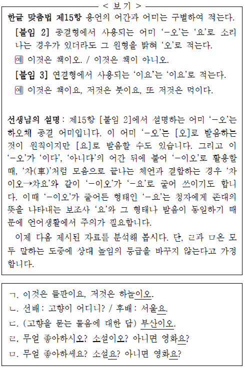
- ㄱ의 밑줄 친 '이오'는 [이요]로 발음할 수 있다.
- ㄴ의 밑줄 친 '요'를 '이요'로 바꾸어 적을 수 있다.
- ㄷ의 밑줄 친 '부산이오'는 하오체 문장에 해당한다.
- ㄹ의 밑줄 친 '요'는 모음으로 끝나는 체언 뒤에서 '-이오'가 줄어든 형태에 해당한다.
- ㅁ의 밑줄 친 '요'는 둘 다 청자에게 존대의 뜻을 나타내는 보조사에 해당한다.
(정답률: 알수없음)
10. <보기>는 사전 자료의 일부분이다. 이에 대한 이해로 가장 적절한 것은?
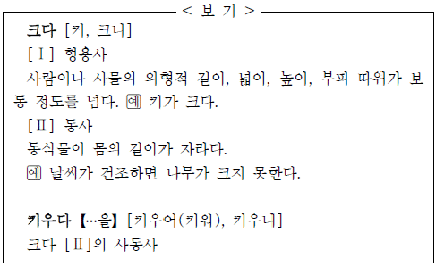
- '크다'[Ⅰ]과 '크다'[Ⅱ]는 별도의 품사로 기술된 걸 보니 동음이의어이겠군.
- '크다'[Ⅰ]과 '크다'[Ⅱ]의 반의어로는 모두 '작다'가 가능하겠군.
- '크다'[Ⅰ]의 용례로 '키가 몰라보게 컸구나.'를 추가할 수 있겠군.
- '크다'[Ⅱ]는 사동사로 바뀌면 서술어의 자릿수가 하나 늘어나는군.
- '크다'와 '키우다'는 모두 어미 '-어'가 결합하면 어간 끝의 모음이 탈락하는군.
(정답률: 28%)
11. 윗글을 바탕으로 할 때, <보기>의 선생님의 질문에 대한 학생의 답변으로 가장 적절한 것은?(16번 공통지문 문제)
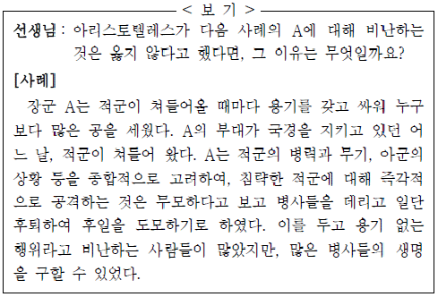
- 실천적 지혜에 따라 심사숙고하여 행위하였기 때문입니다.
- 전쟁에서 승리하고자 하는 욕망을 갖지 않았기 때문입니다.
- 중용에는 맞지 않지만 어쩔 수 없는 상황이었기 때문입니다.
- 결과적으로 더 많은 사람들을 행복에 이르게 했기 때문입니다.
- 지금까지 지속적으로 용기 있는 일을 실천해 온 점을 높이 평가했기 때문입니다.
(정답률: 28%)
12. 윗글을 바탕으로 할 때, <보기>의 ㉮에 들어갈 말로 가장 적절한 것은?(16번 공통지문 문제)
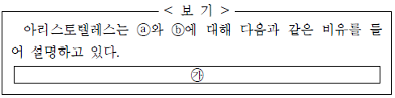
- 건축가가 설계도를 바탕으로 집을 짓듯이, ⓐ를 바탕으로 ⓑ를 형성해야 한다.
- 제자가 스승의 업적을 뛰어넘는 경우가 있듯이, ⓐ를 함양하여 ⓑ를 능가해야 한다.
- 기름과 물이 서로 섞이지 않은 채로 있듯이, ⓐ와 ⓑ는 서로 독립적으로 있어야 한다.
- 아들이 아버지의 명령에 귀 기울이고 순종해야 하듯이, ⓐ는 ⓑ의 명령에 따라야 한다.
- 물을 끌어올리기 위해 마중물이 필요하듯이, ⓐ가 존재하기 위해서는 ⓑ가 먼저 존재해야 한다.
(정답률: 알수없음)
13. 밑줄 친 단어 중 '넘침'과 '모자람'의 의미가 모두 있는 것은?(16번 공통지문 문제)
- 참석자의 과반수(過半數)가 그 안건에 찬성하였다.
- 수도권에 인구가 과다(過多)하게 집중되고 있다.
- 과도(過度)한 지출로 파산 지경에 이르렀다.
- 과소비(過消費)를 근절할 필요가 있다.
- 과부족(過不足)이 없이 꼭 들어맞다.
(정답률: 알수없음)
14. 윗글에 근거할 때, 출원하려는 상표의 등록 가능성을 가장 적절하게 판단하고 있는 것은?(20번 공통지문 문제)
- 이것은 식별력이 인정되는 표장을 사용하고 있으므로, 국제 기관의 명칭과 같더라도 상표로 등록받을 수 있을 거야.
- 이것은 현저한 지리적 명칭을 사용하고 있지만, 해당 상품을 생산하는 자만으로 법인을 구성하여 출원한다면 상표로 등록 받을 가능성이 있겠군.
- 이것은 동업자들이 관용적으로 사용하고 있지만, 우리가 예전부터 사용해 왔다는 것을 많은 사람들이 알고 있으니 상표로 등록받을 가능성이 있겠군.
- 이것은 식별력이 인정되지 않는 표장이므로, 식별력이 인정되지 않는 다른 표장과 결합하여 새로운 관념을 형성하더라도 상표로 등록받을 수 없을 거야.
- 이것은 상표법 제7조에 제시되어 있는 간단하고 흔히 있는 표장에 해당하므로 상표로 등록받을 수 있을 거야.
(정답률: 20%)
15. 윗글과 <보기>의 내용을 함께 고려할 때, ㉮에 들어갈 내용으로 가장 적절한 것은? [3점](20번 공통지문 문제)
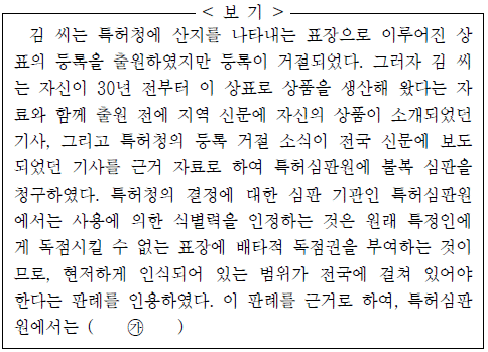
- 청구인의 상표 등록을 허용하는 것은 청구인 지역의 수요자들에게 상품의 출처를 혼동하게 하므로 청구를 기각하였다.
- 청구인의 상표가 출원 후에는 수요자들에게 청구인의 상표로 현저하게 인식되어 있다며, 특허청의 결정을 취소하였다.
- 청구인의 상품이 오랫동안 생산되어 왔기 때문에 사용에 의한 식별력을 인정할 수 있다며, 특허청의 결정을 취소하였다.
- 청구인의 상표가 처음에는 관용하는 상표였지만 현재 기술적 상표가 되었다고 볼 수 있다며, 특허청의 결정을 취소하였다.
- 청구인의 상표가 출원 전에 수요자들에게 청구인의 상표로 현저하게 인식되어 있다고 볼 수 없다며, 청구를 기각하였다.
(정답률: 알수없음)
16. 윗글의 ㉠과 <보기>의 ⓐ에 대한 설명으로 가장 적절한 것은?(20번 공통지문 문제)
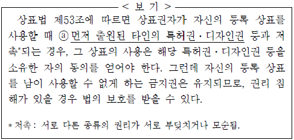
- ㉠과 ⓐ는 모두 등록 상표에 대한 상표권자의 권리를 강화한다.
- ㉠은 누군가 권리를 침해할 경우 법에 의해 보호받을 수 있지만, ⓐ는 그렇지 않다.
- ㉠은 소유권자의 이익을 지키기 위해, ⓐ는 다수의 이익을 지키기 위해 법의 보호를 받는다.
- ㉠은 출원된 뒤부터 상표권자의 권리가 인정되지만, ⓐ는 출원 이전이라도 해당 소유권자의 권리가 인정된다.
- ㉠은 그보다 늦게 출원된 동일 또는 유사한 상표의 등록을, ⓐ는 그와 저촉되는 등록 상표의 사용을 제한한다.
(정답률: 알수없음)
17. 윗글에 대한 이해로 적절하지 않은 것은?(24번 공통지문 문제)
- 음향판의 모양은 피아노 특유의 음색에 변화를 가져올 수 있군.
- 건반 개수는 액션 개수와는 같지만, 현의 개수보다는 적겠군.
- 건반을 세게 내려치면 액션은 그 힘을 자연스럽게 완화시키는 기능을 하는군.
- 건반을 눌러도 소리가 나지 않는다면 해머가 현을 때리지 못하고 있을 가능성이 있겠군.
- 해머가 현을 때린 후 곧바로 현에서 떨어지지 않으면 연주자가 의도한 대로 현이 울리지 않을 수 있겠군.
(정답률: 알수없음)
18. ㉠을 밟았을 때의 효과를 바르게 추론한 것은?(24번 공통지문 문제)
- 건반에서 손을 떼도 해당 건반 음이 지속된다.
- 건반에서 손을 떼도 해당 건반 음 외의 다른 음이 공명한다.
- 건반에서 손을 떼지 않아도 해당 건반 음을 멈춘다.
- 건반을 누를 때 해당 건반 음의 음량을 감소시킨다.
- 건반을 누를 때 해당 건반 음 외의 다른 음이 공명한다.
(정답률: 알수없음)
19. 윗글을 참고하여 <보기>를 연주한다고 할 때, 이에 대한 설명으로 가장 적절한 것은? [3점](24번 공통지문 문제)
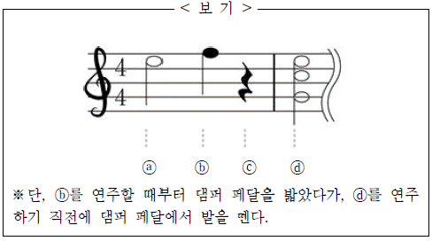
- ⓐ를 연주할 때, 건반을 손에서 뗀 후에도 현은 계속 진동하게 되므로 ⓑ의 연주 음과 부드럽게 연결된다.
- ⓑ를 연주할 때, 건반을 누르고 있는 동안 해당 현만 댐퍼에 붙지 않으므로 댐퍼 페달을 밟지 않을 때보다 음량이 커진다.
- ⓑ를 연주할 때, 건반을 매우 강하게 누른다고 해도 ⓒ에서는 어떠한 현도 진동하지 않기 때문에 ⓒ에서는 소리가 나지 않는다.
- ⓓ를 연주할 때에는 ⓐ, ⓑ와 달리 건반을 손에서 뗀 후에는 해당 건반의 현 외에는 울리지 않게 된다.
- ⓓ를 연주할 때, 건반들을 누르고 있는 동안 해당 건반들의 댐퍼는 현에서 떨어져 있으므로 해당 음들이 서로 공명을 일으킨다.
(정답률: 10%)
20. ㉠에 근거하여 <보기>에 대해 보인 반응으로 적절하지 않은 것은? [3점](28번 공통지문 문제)
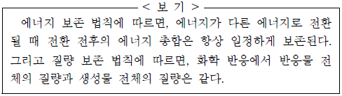
- 에너지가 다른 에너지로 전환될 때 엄밀한 의미에서 에너지의 총합은 증가하겠군.
- 에너지 보존 법칙이 엄밀하게 적용되기 위해서는 에너지의 전환 과정에서 질량의 변화 여부도 고려되어야겠군.
- 화학 반응에서 반응물의 질량보다 생성물의 질량이 크다면 반응 결과에 따른 생성물에 잠재된 에너지는 증가했겠군.
- 화학 반응에서 에너지의 유입이나 유출이 있다면 엄밀한 의미에서 질량 보존의 법칙이 성립하지 않을 수 있겠군.
- 화학 반응에서 발열 등으로 질량 손실이 일어난다고 해도 일상적인 수준에서는 감지하기 어려울 만큼 적은 양이겠군.
(정답률: 16%)
21. ⓐ, ⓑ에 대해 이해한 내용으로 적절하지 않은 것은?(28번 공통지문 문제)
- ⓐ에서 빛의 방출에는 반동이 수반된다고 본다.
- ⓐ에서 A와 B가 인식하는 빛의 진행 방향은 다르다고 본다.
- ⓑ에서 에너지의 방출은 질량의 손실을 의미하는 것으로 본다.
- ⓑ에서 A와 B는 모두 발광기를 상자에 대해 정지 상태에 있는 것으로 인식한다고 본다.
- ⓑ에서 발광기에서 발사한 두 방향의 빛은 결과적으로 발광기의 운동을 변화시킨 것으로 본다.
(정답률: 0%)
22. ㉠과 ㉡에 대한 설명으로 가장 적절한 것은?(31번 공통지문 문제)
- ㉠은 인물이 하던 상상의 흐름에 영향을 미친다.
- ㉡은 다른 인물과의 관계를 어색하게 만들고 있다.
- ㉠으로 인해 조성된 긴장감은 ㉡을 통해 해소되고 있다.
- ㉠은 인물에 대한 호감을 강화하고, ㉡은 인물에 대한 반감을 불러일으키고 있다.
- ㉠과 ㉡은 모두 인물의 상상 속에서만 들리는 것이다.
(정답률: 20%)
23. ⓐ~ ⓔ에 대한 설명으로 적절하지 않은 것은?(31번 공통지문 문제)
- ⓐ : 대화를 나누고 있는 인물에 대해 지금까지는 별로 신경을 쓰고 있지 않았음을 짐작할 수 있다.
- ⓑ : 대화를 나누는 상대방에 대해 심리적인 거리를 두고자 함을 엿볼 수 있다.
- ⓒ : 비꼬는 말투를 통해 버스가 늦게 출발하게 된 상황에 대한 불만을 엿볼 수 있다.
- ⓓ : 상대방이 앞에서 자신에게 했던 농담을 활용하여 대응하고 있다.
- ⓔ : 상대방이 자신에 대해 알려고 하는 것에 대해 불편한 기색을 드러내고 있다.
(정답률: 알수없음)
24. <보기>를 바탕으로 윗글을 감상한 내용으로 적절하지 않은 것은? [3점](31번 공통지문 문제)
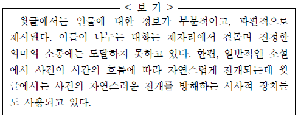
- '박 씨'에 대한 정보는 '고깔모자', '기피자', '전직 교사'와 같이 부분적인 것들이 흩어져서 제시되고 있다.
- 한집에 사는 '김 씨', '이 씨', '박 씨' 들은 서로 의미 있는 대화를 하고자 하지만 진정한 소통에는 이르지 못하고 있다.
- '이 씨'가 '여차장'에게 무의미한 농담을 건네는 모습에서 진정한 의미의 소통이 이루어지지 않는 상황을 확인할 수 있다.
- '박 씨'와 '김 씨', '이 씨' 등으로 서술 대상을 계속 바꾸어 서술하여 시간의 흐름에 따른 서사 전개를 지연시키고 있다.
- '김 씨'가 장님이 되는 상상에 빠져드는 장면이 다른 인물들의 대화에 바로 이어져서 서사의 자연스러운 흐름을 방해하고 있다.
(정답률: 10%)
25. [A]와 [B]에 대한 설명으로 적절하지 않은 것은?(35번 공통지문 문제)
- [A]의 청자는 의인화되어 있다.
- [B]는 특정 어구를 반복하고 있다.
- [A]와 [B] 모두 구체적 청자가 설정되어 있다.
- [A]는 명령형 어미, [B]는 청유형 어미가 사용되었다.
- [A]는 영탄적 어조, [B]는 냉소적 어조가 나타나 있다.
(정답률: 28%)
26. 제시된 과제를 수행한 결과로 적절하지 않은 것은? [3점](35번 공통지문 문제)
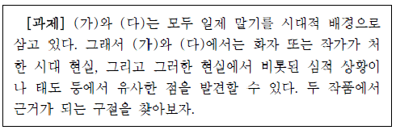
- (가)의 '죄인처럼 수그리고' 있는 화자의 모습과 (다)의 '병든 몸으로 숨어서' 살아가는 작가의 모습에서 유사점을 찾을 수 있다.
- (가)에서는 '두만강'이 화자에게, (다)에서는 '국화'가 작가에게 각별한 의미를 지니는 존재라는 점에서 유사하다고 볼 수 있다.
- (가)의 '바람이 이리처럼 날뛰는 강'은 (다)의 '쫓기는 백성의 울부짖음밖에' 없는 세상과 유사한 의미로 볼 수 있다.
- (가)의 화자는 '밤 우에 밤'에서도, (다)의 작가는 '지루하고 고달프던 세월'에서도 미래에 대한 낙관적 태도를 유지한다고 볼 수 있다.
- (가)의 '울 줄 몰라 외롭다'와 (다)의 '어쩌지 못할 설움'에서 화자와 작가의 심적 상황을 느낄 수 있다.
(정답률: 25%)
27. <보기>를 바탕으로 (나)를 해석할 때, 적절하지 않은 것은?(35번 공통지문 문제)
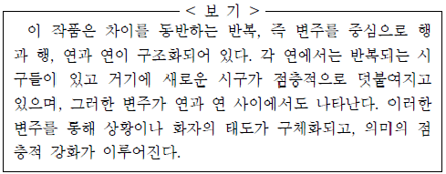
- 1연에서는 '떨어진', '마당 위에 떨어진'이 점층적으로 덧붙여지면서 '눈은 살아 있다'의 상황이 구체화된다고 볼 수 있다.
- 1 ~ 2연으로 이루어진 전반부의 내용은 3 ~ 4연으로 이루어진 후반부에서 변주된다고 볼 수 있다.
- 1연과 3연은 '눈은 살아 있다'라는 시구를 중심으로, 2연과 4연은 '기침을 하자'라는 시구를 중심으로 변주되고 있다.
- 2연의 '눈더러 보라고 마음놓고 마음놓고'는 4연의 '눈을 바라보며'로 변주되면서 의미의 점층적 강화가 나타난다고 볼 수 있다.
- 4연의 '밤새도록 고인 가슴의 가래라도 마음껏 뱉자'에서는 '기침을 하자'가 '가래라도 뱉자'로 변화되면서 거기에 '밤새도록 고인 가슴의'와 '마음껏'이 덧붙여져 있다.
(정답률: 30%)
28. ㉠~ ㉤에 대한 설명으로 적절하지 않은 것은?(35번 공통지문 문제)
- ㉠ : 낙향이 어쩔 수 없는 상황에 의한 것이었음을 '하는 수 없이'를 통해 드러내고 있다.
- ㉡ : 동일한 일상을 반복하고 있는 모습을 '날마다', '밤마다'를 통해 드러내고 있다.
- ㉢ : 가을이 깊어질수록 국화의 청초함이 돋보이게 됨을 '더욱'을 통해 표현하고 있다.
- ㉣ : 국화를 여유 있게 즐기지 못하는 현재 자신의 처지를 '닭만큼도'를 통해 부각하고 있다.
- ㉤ : 국화를 보면서 점점 위축되어 가는 자신의 존재감을 '한갓'을 통해 부각하고 있다.
(정답률: 알수없음)
29. ⓐ와 ⓑ를 비교한 내용으로 가장 적절한 것은?(40번 공통지문 문제)
- ⓐ는 ⓑ에 비해 화자의 다양한 소망이 열거되고 있다.
- ⓐ는 ⓑ와 달리 자연물에 감정을 투영하여 자신의 정서를 표출하고 있다.
- ⓑ는 ⓐ에 비해 본심을 숨긴 채 우회적으로 의사를 전달하고 있다.
- ⓑ는 ⓐ와 달리 미래에 대한 부정적인 전망을 암시하고 있다.
- ⓐ와 ⓑ는 모두 가정적인 상황을 설정하여 화자의 강한 의지를 드러내고 있다.
(정답률: 20%)
30. <보기>를 참고하여 윗글을 감상한 내용으로 적절하지 않은 것은? [3점](40번 공통지문 문제)
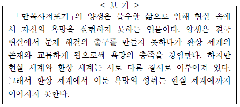
- 양생이 부처님에게 저포 놀이를 하자고 제안한 것은, 현실 세계와 환상 세계의 대립을 해소하려는 시도로 볼 수 있겠군.
- 양생과 여인이 서로 만나 즐거움을 나누는 곳이라는 점에서, 만복사는 현실 세계의 존재와 환상 세계의 존재가 교류하는 공간으로 볼 수 있겠군.
- 여인이 양생에게 이곳의 사흘이 인간 세계의 삼 년과 같다고 말하는 장면은, 현실 세계와 환상 세계의 질서가 다름을 말하는 것으로 볼 수 있겠군.
- 양생이 여인과 이별하고 인간 세계로 돌아가야 한다는 것은, 환상 세계에서 성취된 욕망이 현실 세계에까지 이어질 수 없음을 의미하는 것으로 볼 수 있겠군.
- 양생이 좋은 배필을 얻고자 했으나 여태껏 장가를 들지 못했다는 것은, 그가 현실 세계에서는 충족되지 못한 욕망을 안고 살아왔다는 것으로 볼 수 있겠군.
(정답률: 10%)
31. (가)의 맥락에서 [A]에 대해 이해한 내용으로 적절하지 않은 것은?(43번 공통지문 문제)
- '청산', '유수'는 모두 인간이 지향해야 할 대상으로서의 천리를 연상시키는 소재라 할 수 있다.
- '만고에 프르르며', '주야애 긋디 아니고'는 '청산'과 '유수'를 통해 드러난 보편타당한 이치의 속성을 표현한 것으로 볼 수 있다.
- 초, 중장은 인간의 현실에서 천리를 구현하고자 하는 과정에서 겪을 수밖에 없는 어려움에 대한 한탄을 표현한 것으로 볼 수 있다.
- 종장에서 '청산'과 '유수'의 속성을 '우리'와 관련된 것으로 재진술한 것은, 자연에 구현된 천리를 인간이 추구해야 할 이치로 보는 시각을 드러낸 것으로 볼 수 있다.
- 종장은 자연을 닮고자 하는 노력을 통해 현실 속에서 천리를 구현하고자 하는 태도를 드러낸 것으로 볼 수 있다.
(정답률: 31%)
32. (가)를 바탕으로 하여 (나)를 감상한 내용으로 적절하지 않은 것은? [3점](43번 공통지문 문제)
- <춘 1>에서 시간의 흐름에 따라 교차하는 '안
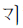
'와 '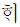
', '밤믈'과 '낟믈'은 자연의 질서와 조화를 드러내는 것으로 볼 수 있군. - <춘 4>에서 '어촌 두어 집'은 '벅구기'와 '버들숩'이 어우러진 가운데 '온갇 고기 뛰노'는 자연의 모습과 대조를 이루면서 현실의 혼탁함을 드러내는 것으로 볼 수 있군.
- <하 6>에서 '만고심'이란 어부 생활의 풍류를 즐기면서도 한편으로는 현실을 떠올리고 안타까워하는 화자의 내면을 가리키는 것으로 볼 수 있군.
- <추 2>에서 '만경 징파에 슬지 용여
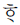
쟈'는 화자의 말은 자연에 몰입하여 흥취를 즐기고자 하는 태도를 드러낸 것으로 볼 수 있군. - <추 2>에서 '머도록 더욱 됴타'는 것은 '인간'으로 제시된 현실의 부조리함에 대한 화자의 거리감을 반영한 표현으로 볼 수 있군.
(정답률: 알수없음)